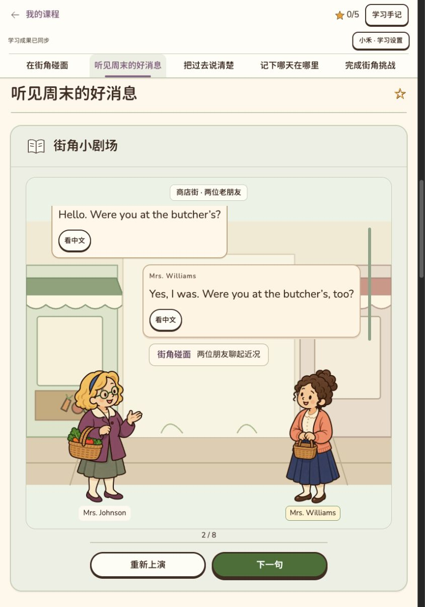
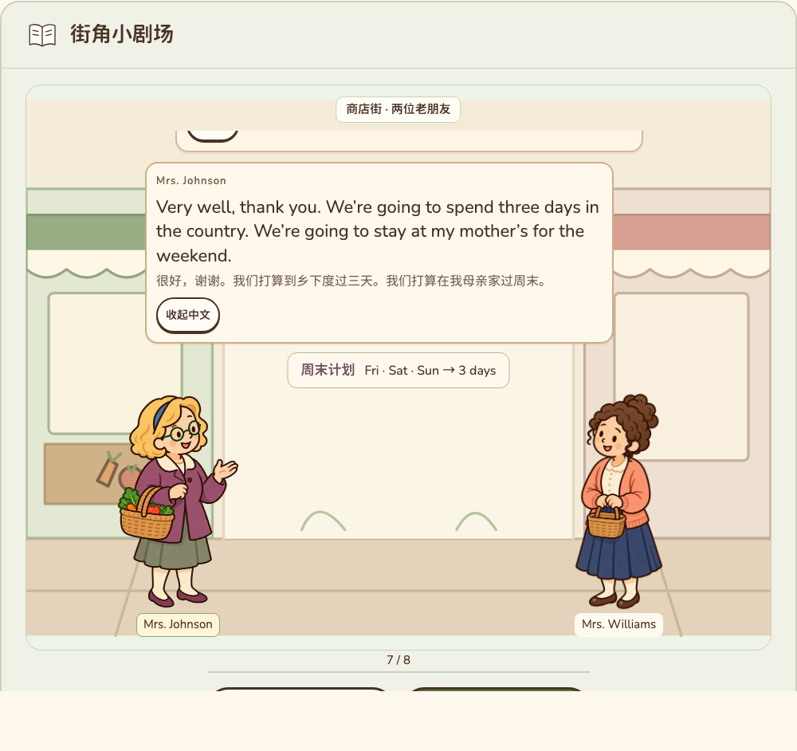
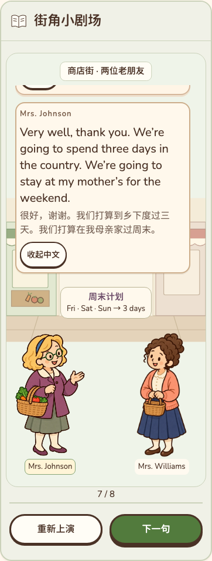
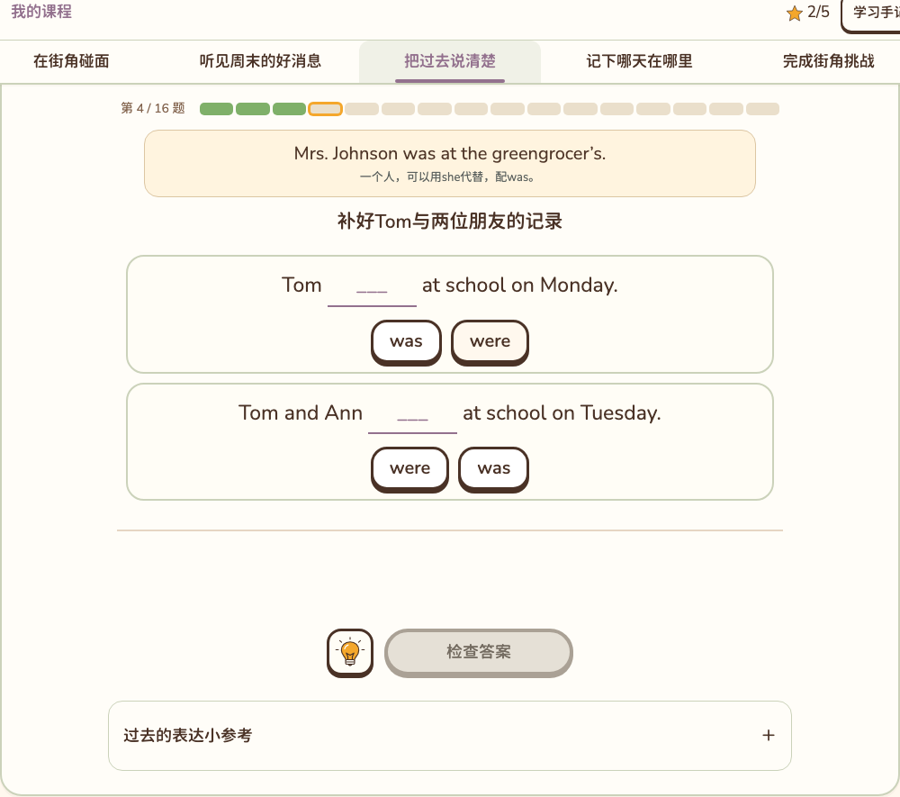
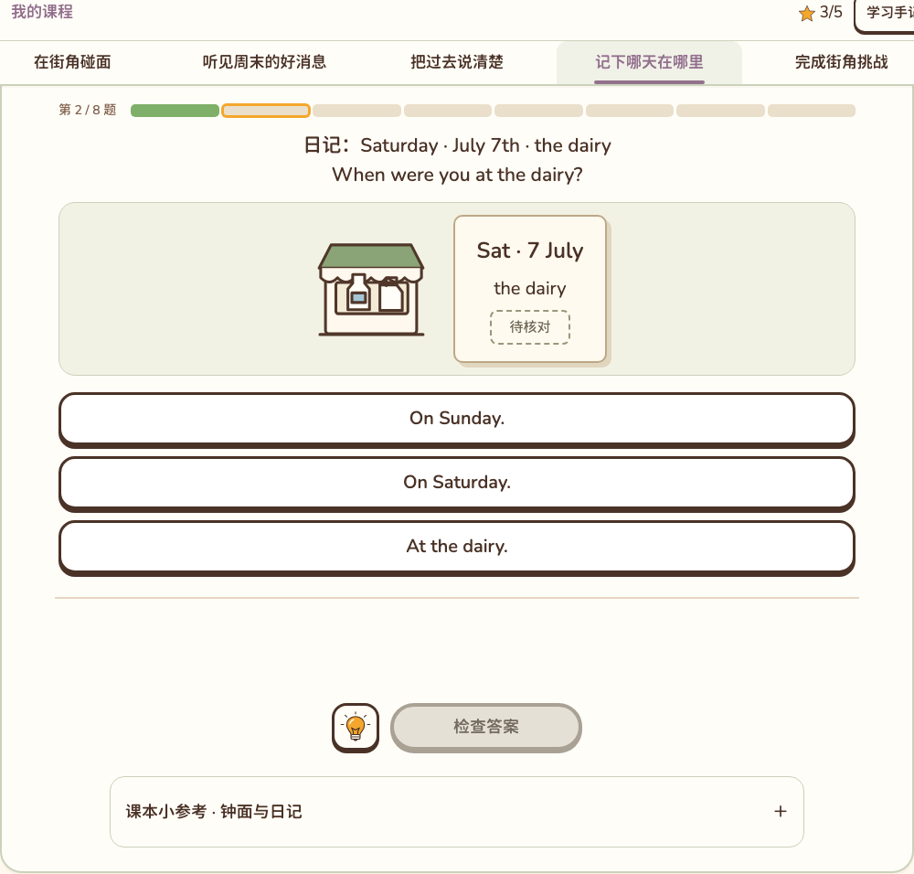
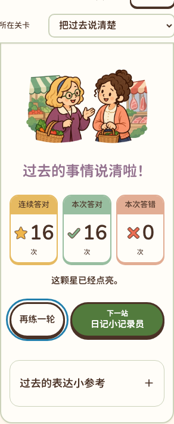
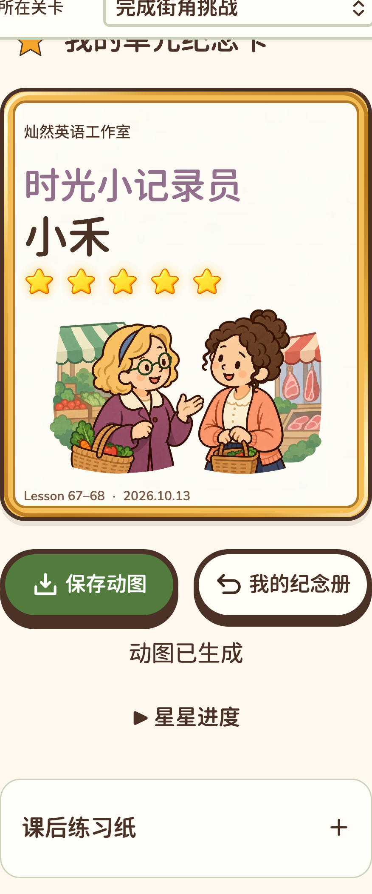
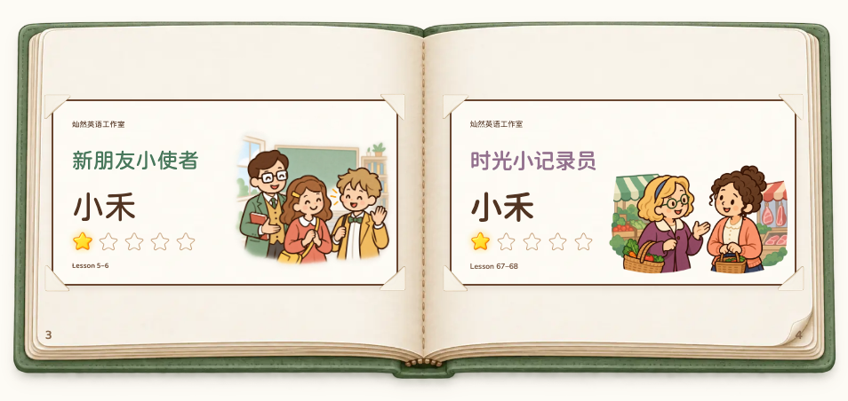
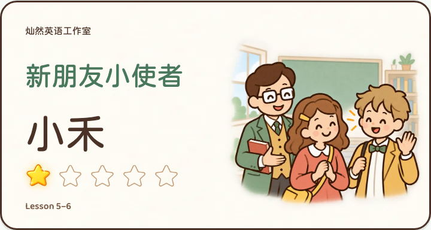

Lesson 67–68 · 街角的周末消息
62题、五区五星、30张音标词卡、8轮完整对白。下列为本地浏览器实际画面；小禾等姓名属于独立验收账号。手机截图为浏览器模拟，不代表手机微信验收。功能通过与审美确认分开。
设计及验收边界 · 实际下载的60帧循环纪念卡

当前4320本地预览 · 小禾 · 2/8轮对白
1280宽 · 第7轮原文与周末计划
390宽 · 长对白与中文在场景内
语法短示范与相关两空
检查后才盖章的日记任务
320×568 · 三张统计卡及推进按钮真实账号 · 五星卡
320宽移动WebKit · 五星卡长姓名 · 卡内完整呈现
真实纪念册 · 旧课与本课同为小禾、一星实际下载动图的第15帧同姓名、同星数、同尺寸对照
Lesson 1-2 · 小禾 · 一星Lesson 3-4 · 小禾 · 一星
Lesson 5-6 · 小禾 · 一星Lesson 67-68 · 小禾 · 一星